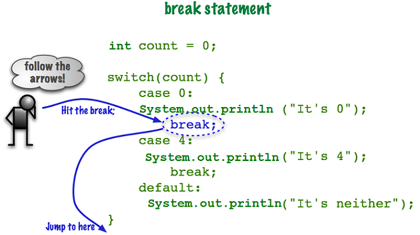

The Switch Structure
Programming languages have many ways to do the same thing. The switch structure is another way to create a decision structure. The switch structure is also known as a case or select case structure. Remember, in the chapter on the multiple alternative decision structures, I said if you had more than one, two max, else if conditions, you are better off using a switch.
The switch Statement
When you need to make a switch statement and you are writing the 5-Step Solution Algorithm, you can code the decision structure as shown below, where myStringVariable.toUpperCase() represents a string that you want to compare to each case. If the string matches a case, then that case's run code executes. If the string does not match any of the cases, then the default run code executes. Please note that the variable you are switching on does not need to be a String. Notice you switch on a variable, not a relationship. The relationship is between your variable and each case. You are asking the question is my variable the same value as one of the cases.
SWITCH on ( myStringVariable.toUpperCase()){
case "A":
run the "A" code
break out of case structure;
case "B":
run the "B" code
break out of case structure;
case "C":
run the "C" code
break out of case structure;
case "D":
run the "D" code
break out of case structure;
default:
run the default code
break out of case structure;
} //end of switch structure
In the example below, the switch structure compares the variable myStringVariable.toUpperCase() with all the case conditions, looking for one that reconciles to true. Notice the keyword break; which will be explained later.
Please study the Java code example below. Although the syntax is different, you are making a multiple alternative decision. This switch statement reads:
“if the uppercase of choice is ‘A’, then run that code and break out of the structure; else if choice is ‘B’, then run that code and break out of the structure; else if choice is ‘C’, then run that code and break out of the structure; else if choice is ‘D’, then run that code and break out of the structure; if no case matches choice, then the default (think else) code runs.”
// switch statement
switch (choice.toUpperCase()) {
case "A":
//do the A things;
break;
case "B":
//do the B things;
break;
case "C":
//do the C things;
break;
case "D":
//do the D things;
break;
case "E":
//do the E things;
break;
case "F":
//do the F things;
break;
case "G":
//do the G things;
break;
default:
//do the default;
break;
}//end switch structure
Remember, the variable you are switching on cannot be a relationship. In other words, within the parentheses, you cannot compare the variable to another value. That is why I used .toUpperCase() instead of .equalsIgnoreCase(). The built-in Java method .toUpperCase() changes the value to uppercase letters, which is the same as my case statements. The built-in Java method .equalsIgnoreCase() is checking to see if two values are the same, which is a relationship.
Take a break;
What does break; do? Remember, the switch structure is a decision structure. Each case represents a condition. The first case statement in the image below would read, is it true that the value of count is 0. The switch statement does not automatically stop when a true case is encountered. Instead, the switch statement continues evaluating every case statement even after the a true condition is found, unless a break; is encountered.
Please study the below image making sure you follow the arrows.
The switch statement tested the variable count against the condition case 0. Since count is equal to 0, the code associated with case 0 runs. When the code hits the break; statement, it jumps completely out of the switch structure.
Think of it this way: Now that I have found a true condition, break me out of this switch structure
It is important to remember, that if none of the case statements proved to be true then the program will run the code associated with the optional default section. Yes, you heard that correctly, default is optional, however, I highly recommend you include it in your switch structures.
You can omit the break; statement if you want the same code to run for multiple conditions. In the code below, cases “D” and “F” will output the same statement. Please study the code below.
// No break for some
String grade = "D";
switch(grade.toUpperCase()) {
case "A":
System.out.println("Excellent work");
break;
case "B":
System.out.println("Keep up the good work");
case "C":
System.out.println("Please make an appointment with me");
case "D":
case "F":
System.out.println("You must have a least a C to advanced to the next class");
break;
default:
System.out.println("Your grade entry is not valid");
break;
}
Things to Remember
Prior to Java version 1.7.x you could not use a String data type as the variable to switch on. The switch statement continues to evolve with new versions of Java.
Be warned, not all data types will work in a switch statement. For Program Logic, stick with String or int data types. Still, the switch structure is easy to use and easy to read.
Although including a default condition is not mandatory, it is considered good coding. The default condition is like the else statement. If all else fails, runs this code.
The switch statement is efficient and we can "drop through" to other cases. Intentionally leaving out breaks in a switch structure can actually be a valuable tool in building more complex software.
As a rule of thumb, go with the switch structure if your else if is more than two deep. The switch structure is faster than a multiple alternative decision structure when you have a long list of conditions to check.
You can have multiple statements associated with each case condition in your structure. You can also nest a switch structure inside of the case conditions.
Finally, switch structures can be nested inside of other decision structures and vice versa.
Detailed Example
This detailed example revisits the Process Customer Record code. However, this time, we use the switch structure. This example contains the 5-Step Solution Algorithm including the Java code. I highly recommend that you create a NetBeans project, type the Java code into it, add the comments, and test the program according to the test plan.
Assignment Information
Please see Blackboard for assignment preparation tasks and assignment details.
What's next?
This concludes the unit on Decision Structures. After completing the homework assignments, please continue to the next unit.